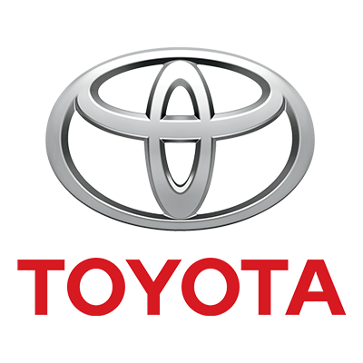

1. Lexus: Lexus, la marca de lujo de Toyota, es conocida por su excepcional fiabilidad y calidad de construcción. A menudo se sitúa en la cima de las encuestas de fiabilidad debido a su durabilidad y el alto nivel de satisfacción del cliente.
2. Toyota: Toyota es mundialmente reconocida por su fiabilidad y durabilidad. Modelos como el Corolla y el Camry han ganado reputación por su longevidad y bajo costo de mantenimiento.
3. Mazda: Mazda ha destacado en los últimos años por su combinación de fiabilidad, rendimiento y diseño atractivo. Modelos como el Mazda3 y el CX-5 son especialmente valorados por su fiabilidad.
4. BMW: BMW, conocida por sus vehículos de lujo y rendimiento, también ha mejorado su fiabilidad en los últimos años. Modelos como el Serie 3 y el X5 ofrecen una experiencia de conducción premium con una sólida reputación de fiabilidad.